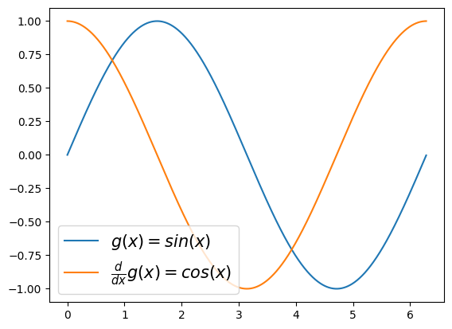
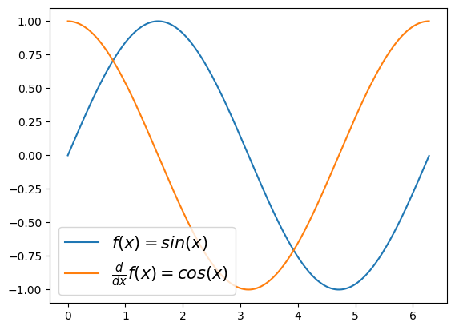

Lesson 09: pandas III
imports
예비학습
A. lambda
- 예제1: 람다표현식(lambda expression)자체가 하나의 오브젝트임
<function __main__.<lambda>(x)>(사용방법)
quiz
\(f(x)=\sqrt{x}\) 를 수행하는 함수를 lambda를 이용하여 구성하라.
- 예제2: 람다표현식에 이름을 줄 수 있음.
위의 코드는 아래와 같다.
- 예제3: 조건부 출력
quiz
임의의 알파벳 문자열을 입력으로 하고, 알파벳이 대문자이면 “대문자 입니다”를 리턴하고 소문자이면 “소문자 입니다”를 리턴하는 함수를 구성하라.
(힌트) 아래코드 이용
- 예제4: 람다표현식들의 리스트

- 예제5: 람다표현식들의 딕셔너리
{'f1': <function __main__.<lambda>(x)>,
'f2': <function __main__.<lambda>(x)>,
'f3': <function __main__.<lambda>(x)>}- 예제6: 람다표현식을 리턴하는 함수 (함수를 리턴하는 함수)
(예비학습) 함수 \(g(x)\)가 정의되어 있을때 \(\frac{d}{dx}g(x)\)의 값을 계산해보기
\(g(x)=x^2\)
\[g'(x)=gg(x)=2x\approx \frac{g(x+0.001)-g(x)}{0.001}\]
(목표) 도함수를 구해주는 derivate 함수를 정의하자. 이 함수는 임의의 함수 g를 입력으로 받으면, g의 도함수(gg)가 리턴되는 기능을 가진다.
(사용1)
plt.plot(x,g(x),label=r'$g(x)=sin(x)$')
plt.plot(x,gg(x),label=r'$\frac{d}{dx}g(x)=cos(x)$')
plt.legend(fontsize=15)
(사용2)
x = np.linspace(-1,1,100)
plt.plot(x,g0(x),'--',label=r'$g_0(x)=\frac{1}{6}x^3$')
plt.plot(x,g1(x),'--',label=r'$g_1(x)=\frac{1}{2}x^2$')
plt.plot(x,g2(x),'--',label=r'$g_2(x)=x$')
plt.legend(fontsize=15)
- 예제7: 예제6의 다른표현
(사용1)
plt.plot(x,g(x),label=r'$f(x)=sin(x)$')
plt.plot(x,gg(x),label=r'$\frac{d}{dx}f(x)=cos(x)$')
plt.legend(fontsize=15)
(사용2)
B. map
- 개념: $(f,[x_1,x_2,,x_n] )=$
- 예제1:
(다른구현1)
(다른구현2)
quiz
\(x=[1,2,3,4,5]\)에 대하여 \(x^2\)을 수행하는 함수를 구현하라.
- 예제2: 문자열을 입력으로 받고 대문자이면 True, 소문자이면 False
입력: A,B,C,a,b,c
출력: T,T,T,F,F,F- 예제3: 두개의 입력을 받는 함수 (map을 이용하는 것이 리스트 컴프리헨션보다 조금 편한것 같다)
(다른구현)– 리스트컴프리헨션
quiz
\(f(x,y) = \max(x,y)\) 를 구현하여 \({\bf x}\),\({\bf y}\) 각 원소에 적용하고 결과를 시각화 하라.

- 예제4: map은 “하나의 함수에 다양한 입력”을 적용하는 경우에만 사용가능, 리스트컴프리헨션은 “다양한 함수에 다양한 입력” 지원
map으로 구현시도 \(\to\) 실패
리스트컴프리헨션으로 구현시도 \(\to\) 성공
- 종합: map과 리스트컴프리헨션과 비교
- map은 for문을 위한 \(i\)등의 인덱스를 쓰지 않지만 리스트컴프리헨션은 필요함
- map은 좀 더 리스트컴프리헨션보다 제약적으로 사용할 수 밖에 없음.
Pandas: transform column
A. lambda
- 예시1: \(x \to x+2\)
- 예시2: \(x,y \to x+y\)
- 예시3: ‘2023-09’ \(\to\) 9
- 예시4: ‘2023-09’ \(\to\) (2023,9)
- 예시5: 문자열이 ‘cat’이면 1 ’dog’ 이면 0 // ’cat이면 1 ’cat’이 아니면 0
- Note: f로 이름을 정하지 않고 직접 사용 가능
B. map
- 개념: map(f,[x1,x2,...xn])=[f(x1),f(x2),...,f(xn)]
- 예시1: x->x+1을 [1,2,3]에 적용
- 예시2 df.Height열 변환하기
df = pd.read_csv('https://raw.githubusercontent.com/guebin/DV2022/master/posts/FIFA23_official_data.csv')
s = df.Height[:5]
s0 189cm
1 179cm
2 172cm
3 181cm
4 172cm
Name: Height, dtype: object# 예시3 df.Height열 변환하기 + 변환된 열 할당하기
- (풀이1)
| ID | Name | Age | Photo | Nationality | Flag | Overall | Potential | Club | Club Logo | ... | Real Face | Position | Joined | Loaned From | Contract Valid Until | Height | Weight | Release Clause | Kit Number | Best Overall Rating | |
|---|---|---|---|---|---|---|---|---|---|---|---|---|---|---|---|---|---|---|---|---|---|
| 0 | 209658 | L. Goretzka | 27 | https://cdn.sofifa.net/players/209/658/23_60.png | Germany | https://cdn.sofifa.net/flags/de.png | 87 | 88 | FC Bayern München | https://cdn.sofifa.net/teams/21/30.png | ... | Yes | <span class="pos pos28">SUB | Jul 1, 2018 | NaN | 2026 | 189 | 82kg | €157M | 8.0 | NaN |
| 1 | 212198 | Bruno Fernandes | 27 | https://cdn.sofifa.net/players/212/198/23_60.png | Portugal | https://cdn.sofifa.net/flags/pt.png | 86 | 87 | Manchester United | https://cdn.sofifa.net/teams/11/30.png | ... | Yes | <span class="pos pos15">LCM | Jan 30, 2020 | NaN | 2026 | 179 | 69kg | €155M | 8.0 | NaN |
| 2 | 224334 | M. Acuña | 30 | https://cdn.sofifa.net/players/224/334/23_60.png | Argentina | https://cdn.sofifa.net/flags/ar.png | 85 | 85 | Sevilla FC | https://cdn.sofifa.net/teams/481/30.png | ... | No | <span class="pos pos7">LB | Sep 14, 2020 | NaN | 2024 | 172 | 69kg | €97.7M | 19.0 | NaN |
| 3 | 192985 | K. De Bruyne | 31 | https://cdn.sofifa.net/players/192/985/23_60.png | Belgium | https://cdn.sofifa.net/flags/be.png | 91 | 91 | Manchester City | https://cdn.sofifa.net/teams/10/30.png | ... | Yes | <span class="pos pos13">RCM | Aug 30, 2015 | NaN | 2025 | 181 | 70kg | €198.9M | 17.0 | NaN |
| 4 | 224232 | N. Barella | 25 | https://cdn.sofifa.net/players/224/232/23_60.png | Italy | https://cdn.sofifa.net/flags/it.png | 86 | 89 | Inter | https://cdn.sofifa.net/teams/44/30.png | ... | Yes | <span class="pos pos13">RCM | Sep 1, 2020 | NaN | 2026 | 172 | 68kg | €154.4M | 23.0 | NaN |
| ... | ... | ... | ... | ... | ... | ... | ... | ... | ... | ... | ... | ... | ... | ... | ... | ... | ... | ... | ... | ... | ... |
| 17655 | 269526 | Deng Xiongtao | 19 | https://cdn.sofifa.net/players/269/526/23_60.png | China PR | https://cdn.sofifa.net/flags/cn.png | 48 | 61 | Meizhou Hakka | https://cdn.sofifa.net/teams/114628/30.png | ... | No | <span class="pos pos29">RES | Apr 11, 2022 | NaN | 2027 | 190 | 78kg | €218K | 35.0 | NaN |
| 17656 | 267946 | 22 Lim Jun Sub | 17 | https://cdn.sofifa.net/players/267/946/22_60.png | Korea Republic | https://cdn.sofifa.net/flags/kr.png | 48 | 64 | Jeju United FC | https://cdn.sofifa.net/teams/1478/30.png | ... | No | <span class="pos pos29">RES | Jan 1, 2022 | NaN | 2026 | 195 | 84kg | €188K | 21.0 | NaN |
| 17657 | 270567 | A. Demir | 25 | https://cdn.sofifa.net/players/270/567/23_60.png | Turkey | https://cdn.sofifa.net/flags/tr.png | 51 | 56 | Ümraniyespor | https://cdn.sofifa.net/teams/113796/30.png | ... | No | <span class="pos pos29">RES | Jun 6, 2021 | NaN | 2023 | 190 | 82kg | €142K | 12.0 | NaN |
| 17658 | 256624 | 21 S. Czajor | 18 | https://cdn.sofifa.net/players/256/624/21_60.png | Poland | https://cdn.sofifa.net/flags/pl.png | 50 | 65 | Fleetwood Town | https://cdn.sofifa.net/teams/112260/30.png | ... | No | <span class="pos pos29">RES | Jan 1, 2020 | NaN | 2021 | 187 | 79kg | €214K | 40.0 | NaN |
| 17659 | 256376 | 21 F. Jakobsson | 20 | https://cdn.sofifa.net/players/256/376/21_60.png | Sweden | https://cdn.sofifa.net/flags/se.png | 50 | 61 | IFK Norrköping | https://cdn.sofifa.net/teams/702/30.png | ... | No | <span class="pos pos29">RES | Jan 8, 2020 | NaN | 2021 | 186 | 78kg | €131K | 30.0 | NaN |
17660 rows × 29 columns
- (풀이2) – 사실 수틀리면 컴프리헨션 쓰면 된다.
| ID | Name | Age | Photo | Nationality | Flag | Overall | Potential | Club | Club Logo | ... | Real Face | Position | Joined | Loaned From | Contract Valid Until | Height | Weight | Release Clause | Kit Number | Best Overall Rating | |
|---|---|---|---|---|---|---|---|---|---|---|---|---|---|---|---|---|---|---|---|---|---|
| 0 | 209658 | L. Goretzka | 27 | https://cdn.sofifa.net/players/209/658/23_60.png | Germany | https://cdn.sofifa.net/flags/de.png | 87 | 88 | FC Bayern München | https://cdn.sofifa.net/teams/21/30.png | ... | Yes | <span class="pos pos28">SUB | Jul 1, 2018 | NaN | 2026 | 189 | 82kg | €157M | 8.0 | NaN |
| 1 | 212198 | Bruno Fernandes | 27 | https://cdn.sofifa.net/players/212/198/23_60.png | Portugal | https://cdn.sofifa.net/flags/pt.png | 86 | 87 | Manchester United | https://cdn.sofifa.net/teams/11/30.png | ... | Yes | <span class="pos pos15">LCM | Jan 30, 2020 | NaN | 2026 | 179 | 69kg | €155M | 8.0 | NaN |
| 2 | 224334 | M. Acuña | 30 | https://cdn.sofifa.net/players/224/334/23_60.png | Argentina | https://cdn.sofifa.net/flags/ar.png | 85 | 85 | Sevilla FC | https://cdn.sofifa.net/teams/481/30.png | ... | No | <span class="pos pos7">LB | Sep 14, 2020 | NaN | 2024 | 172 | 69kg | €97.7M | 19.0 | NaN |
| 3 | 192985 | K. De Bruyne | 31 | https://cdn.sofifa.net/players/192/985/23_60.png | Belgium | https://cdn.sofifa.net/flags/be.png | 91 | 91 | Manchester City | https://cdn.sofifa.net/teams/10/30.png | ... | Yes | <span class="pos pos13">RCM | Aug 30, 2015 | NaN | 2025 | 181 | 70kg | €198.9M | 17.0 | NaN |
| 4 | 224232 | N. Barella | 25 | https://cdn.sofifa.net/players/224/232/23_60.png | Italy | https://cdn.sofifa.net/flags/it.png | 86 | 89 | Inter | https://cdn.sofifa.net/teams/44/30.png | ... | Yes | <span class="pos pos13">RCM | Sep 1, 2020 | NaN | 2026 | 172 | 68kg | €154.4M | 23.0 | NaN |
| ... | ... | ... | ... | ... | ... | ... | ... | ... | ... | ... | ... | ... | ... | ... | ... | ... | ... | ... | ... | ... | ... |
| 17655 | 269526 | Deng Xiongtao | 19 | https://cdn.sofifa.net/players/269/526/23_60.png | China PR | https://cdn.sofifa.net/flags/cn.png | 48 | 61 | Meizhou Hakka | https://cdn.sofifa.net/teams/114628/30.png | ... | No | <span class="pos pos29">RES | Apr 11, 2022 | NaN | 2027 | 190 | 78kg | €218K | 35.0 | NaN |
| 17656 | 267946 | 22 Lim Jun Sub | 17 | https://cdn.sofifa.net/players/267/946/22_60.png | Korea Republic | https://cdn.sofifa.net/flags/kr.png | 48 | 64 | Jeju United FC | https://cdn.sofifa.net/teams/1478/30.png | ... | No | <span class="pos pos29">RES | Jan 1, 2022 | NaN | 2026 | 195 | 84kg | €188K | 21.0 | NaN |
| 17657 | 270567 | A. Demir | 25 | https://cdn.sofifa.net/players/270/567/23_60.png | Turkey | https://cdn.sofifa.net/flags/tr.png | 51 | 56 | Ümraniyespor | https://cdn.sofifa.net/teams/113796/30.png | ... | No | <span class="pos pos29">RES | Jun 6, 2021 | NaN | 2023 | 190 | 82kg | €142K | 12.0 | NaN |
| 17658 | 256624 | 21 S. Czajor | 18 | https://cdn.sofifa.net/players/256/624/21_60.png | Poland | https://cdn.sofifa.net/flags/pl.png | 50 | 65 | Fleetwood Town | https://cdn.sofifa.net/teams/112260/30.png | ... | No | <span class="pos pos29">RES | Jan 1, 2020 | NaN | 2021 | 187 | 79kg | €214K | 40.0 | NaN |
| 17659 | 256376 | 21 F. Jakobsson | 20 | https://cdn.sofifa.net/players/256/376/21_60.png | Sweden | https://cdn.sofifa.net/flags/se.png | 50 | 61 | IFK Norrköping | https://cdn.sofifa.net/teams/702/30.png | ... | No | <span class="pos pos29">RES | Jan 8, 2020 | NaN | 2021 | 186 | 78kg | €131K | 30.0 | NaN |
17660 rows × 29 columns
#
# 예시4 – df.Position 열에 아래와 같은 변환을 수행하고, 변환된 열을 할당하라.
| before | after |
|---|---|
<span class="pos pos28">SUB |
SUB |
<span class="pos pos15">LCM |
LCM |
<span class="pos pos7">LB |
LB |
<span class="pos pos13">RCM |
RCM |
<span class="pos pos13">RCM |
RCM |
- (풀이1)
df.assign(Position = list(map(lambda x: x.split('>')[-1] if not pd.isna(x) else 'NA', df.Position)))| ID | Name | Age | Photo | Nationality | Flag | Overall | Potential | Club | Club Logo | ... | Real Face | Position | Joined | Loaned From | Contract Valid Until | Height | Weight | Release Clause | Kit Number | Best Overall Rating | |
|---|---|---|---|---|---|---|---|---|---|---|---|---|---|---|---|---|---|---|---|---|---|
| 0 | 209658 | L. Goretzka | 27 | https://cdn.sofifa.net/players/209/658/23_60.png | Germany | https://cdn.sofifa.net/flags/de.png | 87 | 88 | FC Bayern München | https://cdn.sofifa.net/teams/21/30.png | ... | Yes | SUB | Jul 1, 2018 | NaN | 2026 | 189cm | 82kg | €157M | 8.0 | NaN |
| 1 | 212198 | Bruno Fernandes | 27 | https://cdn.sofifa.net/players/212/198/23_60.png | Portugal | https://cdn.sofifa.net/flags/pt.png | 86 | 87 | Manchester United | https://cdn.sofifa.net/teams/11/30.png | ... | Yes | LCM | Jan 30, 2020 | NaN | 2026 | 179cm | 69kg | €155M | 8.0 | NaN |
| 2 | 224334 | M. Acuña | 30 | https://cdn.sofifa.net/players/224/334/23_60.png | Argentina | https://cdn.sofifa.net/flags/ar.png | 85 | 85 | Sevilla FC | https://cdn.sofifa.net/teams/481/30.png | ... | No | LB | Sep 14, 2020 | NaN | 2024 | 172cm | 69kg | €97.7M | 19.0 | NaN |
| 3 | 192985 | K. De Bruyne | 31 | https://cdn.sofifa.net/players/192/985/23_60.png | Belgium | https://cdn.sofifa.net/flags/be.png | 91 | 91 | Manchester City | https://cdn.sofifa.net/teams/10/30.png | ... | Yes | RCM | Aug 30, 2015 | NaN | 2025 | 181cm | 70kg | €198.9M | 17.0 | NaN |
| 4 | 224232 | N. Barella | 25 | https://cdn.sofifa.net/players/224/232/23_60.png | Italy | https://cdn.sofifa.net/flags/it.png | 86 | 89 | Inter | https://cdn.sofifa.net/teams/44/30.png | ... | Yes | RCM | Sep 1, 2020 | NaN | 2026 | 172cm | 68kg | €154.4M | 23.0 | NaN |
| ... | ... | ... | ... | ... | ... | ... | ... | ... | ... | ... | ... | ... | ... | ... | ... | ... | ... | ... | ... | ... | ... |
| 17655 | 269526 | Deng Xiongtao | 19 | https://cdn.sofifa.net/players/269/526/23_60.png | China PR | https://cdn.sofifa.net/flags/cn.png | 48 | 61 | Meizhou Hakka | https://cdn.sofifa.net/teams/114628/30.png | ... | No | RES | Apr 11, 2022 | NaN | 2027 | 190cm | 78kg | €218K | 35.0 | NaN |
| 17656 | 267946 | 22 Lim Jun Sub | 17 | https://cdn.sofifa.net/players/267/946/22_60.png | Korea Republic | https://cdn.sofifa.net/flags/kr.png | 48 | 64 | Jeju United FC | https://cdn.sofifa.net/teams/1478/30.png | ... | No | RES | Jan 1, 2022 | NaN | 2026 | 195cm | 84kg | €188K | 21.0 | NaN |
| 17657 | 270567 | A. Demir | 25 | https://cdn.sofifa.net/players/270/567/23_60.png | Turkey | https://cdn.sofifa.net/flags/tr.png | 51 | 56 | Ümraniyespor | https://cdn.sofifa.net/teams/113796/30.png | ... | No | RES | Jun 6, 2021 | NaN | 2023 | 190cm | 82kg | €142K | 12.0 | NaN |
| 17658 | 256624 | 21 S. Czajor | 18 | https://cdn.sofifa.net/players/256/624/21_60.png | Poland | https://cdn.sofifa.net/flags/pl.png | 50 | 65 | Fleetwood Town | https://cdn.sofifa.net/teams/112260/30.png | ... | No | RES | Jan 1, 2020 | NaN | 2021 | 187cm | 79kg | €214K | 40.0 | NaN |
| 17659 | 256376 | 21 F. Jakobsson | 20 | https://cdn.sofifa.net/players/256/376/21_60.png | Sweden | https://cdn.sofifa.net/flags/se.png | 50 | 61 | IFK Norrköping | https://cdn.sofifa.net/teams/702/30.png | ... | No | RES | Jan 8, 2020 | NaN | 2021 | 186cm | 78kg | €131K | 30.0 | NaN |
17660 rows × 29 columns
- (풀이2) – 리스트컴프리헨션
| ID | Name | Age | Photo | Nationality | Flag | Overall | Potential | Club | Club Logo | ... | Real Face | Position | Joined | Loaned From | Contract Valid Until | Height | Weight | Release Clause | Kit Number | Best Overall Rating | |
|---|---|---|---|---|---|---|---|---|---|---|---|---|---|---|---|---|---|---|---|---|---|
| 0 | 209658 | L. Goretzka | 27 | https://cdn.sofifa.net/players/209/658/23_60.png | Germany | https://cdn.sofifa.net/flags/de.png | 87 | 88 | FC Bayern München | https://cdn.sofifa.net/teams/21/30.png | ... | Yes | SUB | Jul 1, 2018 | NaN | 2026 | 189cm | 82kg | €157M | 8.0 | NaN |
| 1 | 212198 | Bruno Fernandes | 27 | https://cdn.sofifa.net/players/212/198/23_60.png | Portugal | https://cdn.sofifa.net/flags/pt.png | 86 | 87 | Manchester United | https://cdn.sofifa.net/teams/11/30.png | ... | Yes | LCM | Jan 30, 2020 | NaN | 2026 | 179cm | 69kg | €155M | 8.0 | NaN |
| 2 | 224334 | M. Acuña | 30 | https://cdn.sofifa.net/players/224/334/23_60.png | Argentina | https://cdn.sofifa.net/flags/ar.png | 85 | 85 | Sevilla FC | https://cdn.sofifa.net/teams/481/30.png | ... | No | LB | Sep 14, 2020 | NaN | 2024 | 172cm | 69kg | €97.7M | 19.0 | NaN |
| 3 | 192985 | K. De Bruyne | 31 | https://cdn.sofifa.net/players/192/985/23_60.png | Belgium | https://cdn.sofifa.net/flags/be.png | 91 | 91 | Manchester City | https://cdn.sofifa.net/teams/10/30.png | ... | Yes | RCM | Aug 30, 2015 | NaN | 2025 | 181cm | 70kg | €198.9M | 17.0 | NaN |
| 4 | 224232 | N. Barella | 25 | https://cdn.sofifa.net/players/224/232/23_60.png | Italy | https://cdn.sofifa.net/flags/it.png | 86 | 89 | Inter | https://cdn.sofifa.net/teams/44/30.png | ... | Yes | RCM | Sep 1, 2020 | NaN | 2026 | 172cm | 68kg | €154.4M | 23.0 | NaN |
| ... | ... | ... | ... | ... | ... | ... | ... | ... | ... | ... | ... | ... | ... | ... | ... | ... | ... | ... | ... | ... | ... |
| 17655 | 269526 | Deng Xiongtao | 19 | https://cdn.sofifa.net/players/269/526/23_60.png | China PR | https://cdn.sofifa.net/flags/cn.png | 48 | 61 | Meizhou Hakka | https://cdn.sofifa.net/teams/114628/30.png | ... | No | RES | Apr 11, 2022 | NaN | 2027 | 190cm | 78kg | €218K | 35.0 | NaN |
| 17656 | 267946 | 22 Lim Jun Sub | 17 | https://cdn.sofifa.net/players/267/946/22_60.png | Korea Republic | https://cdn.sofifa.net/flags/kr.png | 48 | 64 | Jeju United FC | https://cdn.sofifa.net/teams/1478/30.png | ... | No | RES | Jan 1, 2022 | NaN | 2026 | 195cm | 84kg | €188K | 21.0 | NaN |
| 17657 | 270567 | A. Demir | 25 | https://cdn.sofifa.net/players/270/567/23_60.png | Turkey | https://cdn.sofifa.net/flags/tr.png | 51 | 56 | Ümraniyespor | https://cdn.sofifa.net/teams/113796/30.png | ... | No | RES | Jun 6, 2021 | NaN | 2023 | 190cm | 82kg | €142K | 12.0 | NaN |
| 17658 | 256624 | 21 S. Czajor | 18 | https://cdn.sofifa.net/players/256/624/21_60.png | Poland | https://cdn.sofifa.net/flags/pl.png | 50 | 65 | Fleetwood Town | https://cdn.sofifa.net/teams/112260/30.png | ... | No | RES | Jan 1, 2020 | NaN | 2021 | 187cm | 79kg | €214K | 40.0 | NaN |
| 17659 | 256376 | 21 F. Jakobsson | 20 | https://cdn.sofifa.net/players/256/376/21_60.png | Sweden | https://cdn.sofifa.net/flags/se.png | 50 | 61 | IFK Norrköping | https://cdn.sofifa.net/teams/702/30.png | ... | No | RES | Jan 8, 2020 | NaN | 2021 | 186cm | 78kg | €131K | 30.0 | NaN |
17660 rows × 29 columns
- 개인의견: 이미 람다로 함수를 만들어야 해서 그냥 map을 쓰는게 자연스러움
C. s.apply(변환함수)
- 예시1: 원소별로 처음3개의 숫자만 출력
0 189
1 179
2 172
3 181
4 172
...
17655 190
17656 195
17657 190
17658 187
17659 186
Name: Height, Length: 17660, dtype: object- 예시2: 원소별로 처음3개의 문자만 출력 \(\to\) str자료형을 int자료형으로 변환
(방법1) – 한번에
0 189
1 179
2 172
3 181
4 172
...
17655 190
17656 195
17657 190
17658 187
17659 186
Name: Height, Length: 17660, dtype: int64(방법2) – 연쇄적으로..
D. s.str, idx.str
- 예시1: 원소별로 처음 3개의 숫자만 출력
0 189
1 179
2 172
3 181
4 172
...
17655 190
17656 195
17657 190
17658 187
17659 186
Name: Height, Length: 17660, dtype: object- 예시2: 원소별로 isupper를 수행
- 예시3: 원소별로 공백제거 (pd.Series 뿐만 아니라 pd.Index 자료형에도 사용가능)
Index(['ID', 'Name', 'Age', 'Photo', 'Nationality', 'Flag', 'Overall',
'Potential', 'Club', 'ClubLogo', 'Value', 'Wage', 'Special',
'PreferredFoot', 'InternationalReputation', 'WeakFoot', 'SkillMoves',
'WorkRate', 'BodyType', 'RealFace', 'Position', 'Joined', 'LoanedFrom',
'ContractValidUntil', 'Height', 'Weight', 'ReleaseClause', 'KitNumber',
'BestOverallRating'],
dtype='object')E. s.astype()
- 예시1: 원소의 타입을 모두 int형으로 변경
- 예시2: 원소의 타입을 변환한 이후 브로드캐스팅 (int)
# 예시3: 원소의 타입을 변환한 이후 브로드캐스팅 (str)
| PassengerId | Survived | Pclass | Name | Sex | Age | SibSp | Parch | Ticket | Fare | Cabin | Embarked | logFare | |
|---|---|---|---|---|---|---|---|---|---|---|---|---|---|
| 0 | 1 | 0 | 3 | Braund, Mr. Owen Harris | male | 22.0 | 1 | 0 | A/5 21171 | 7.2500 | NaN | S | 1.981001 |
| 1 | 2 | 1 | 1 | Cumings, Mrs. John Bradley (Florence Briggs Th... | female | 38.0 | 1 | 0 | PC 17599 | 71.2833 | C85 | C | 4.266662 |
| 2 | 3 | 1 | 3 | Heikkinen, Miss. Laina | female | 26.0 | 0 | 0 | STON/O2. 3101282 | 7.9250 | NaN | S | 2.070022 |
| 3 | 4 | 1 | 1 | Futrelle, Mrs. Jacques Heath (Lily May Peel) | female | 35.0 | 1 | 0 | 113803 | 53.1000 | C123 | S | 3.972177 |
| 4 | 5 | 0 | 3 | Allen, Mr. William Henry | male | 35.0 | 0 | 0 | 373450 | 8.0500 | NaN | S | 2.085672 |
위의 자료에서 Embarked 열과 Pclass열을 이용하여 아래와 같은 New Feature를 만들어라.
| Embarked | Pclass | New Feature |
|---|---|---|
| ‘S’ | 3 | ‘S3’ |
| ‘C’ | 1 | ‘C1’ |
| ‘S’ | 3 | ‘S3’ |
| ‘S’ | 1 | ‘S1’ |
| ‘S’ | 3 | ‘S3’ |
(풀이)
#
F. 컴프리헨션, lambda+map을 무시하지 말 것
# 예시1
| PassengerId | Survived | Pclass | Name | Sex | Age | SibSp | Parch | Ticket | Fare | Cabin | Embarked | logFare | |
|---|---|---|---|---|---|---|---|---|---|---|---|---|---|
| 0 | 1 | 0 | 3 | Braund, Mr. Owen Harris | male | 22.0 | 1 | 0 | A/5 21171 | 7.2500 | NaN | S | 1.981001 |
| 1 | 2 | 1 | 1 | Cumings, Mrs. John Bradley (Florence Briggs Th... | female | 38.0 | 1 | 0 | PC 17599 | 71.2833 | C85 | C | 4.266662 |
| 2 | 3 | 1 | 3 | Heikkinen, Miss. Laina | female | 26.0 | 0 | 0 | STON/O2. 3101282 | 7.9250 | NaN | S | 2.070022 |
| 3 | 4 | 1 | 1 | Futrelle, Mrs. Jacques Heath (Lily May Peel) | female | 35.0 | 1 | 0 | 113803 | 53.1000 | C123 | S | 3.972177 |
| 4 | 5 | 0 | 3 | Allen, Mr. William Henry | male | 35.0 | 0 | 0 | 373450 | 8.0500 | NaN | S | 2.085672 |
위의 자료에서 아래와 같은 변환을 하고 싶다면?
\[ f(\text{sex}, \text{sibsp}) = \begin{cases} 0.7 + 0.25 \times \text{sibsp} & \text{if } \text{sex} = \text{'female'} \\ 0.1 + 0.15 \times \text{sibsp} & \text{otherwise} \end{cases} \]
df.assign(Prob= list(map(lambda sex,sibsp: 0.7 + sibsp*0.25 if sex=='female' else 0.2 + sibsp*0.15, df.Sex, df.SibSp)))| PassengerId | Survived | Pclass | Name | Sex | Age | SibSp | Parch | Ticket | Fare | Cabin | Embarked | logFare | Prob | |
|---|---|---|---|---|---|---|---|---|---|---|---|---|---|---|
| 0 | 1 | 0 | 3 | Braund, Mr. Owen Harris | male | 22.0 | 1 | 0 | A/5 21171 | 7.2500 | NaN | S | 1.981001 | 0.35 |
| 1 | 2 | 1 | 1 | Cumings, Mrs. John Bradley (Florence Briggs Th... | female | 38.0 | 1 | 0 | PC 17599 | 71.2833 | C85 | C | 4.266662 | 0.95 |
| 2 | 3 | 1 | 3 | Heikkinen, Miss. Laina | female | 26.0 | 0 | 0 | STON/O2. 3101282 | 7.9250 | NaN | S | 2.070022 | 0.70 |
| 3 | 4 | 1 | 1 | Futrelle, Mrs. Jacques Heath (Lily May Peel) | female | 35.0 | 1 | 0 | 113803 | 53.1000 | C123 | S | 3.972177 | 0.95 |
| 4 | 5 | 0 | 3 | Allen, Mr. William Henry | male | 35.0 | 0 | 0 | 373450 | 8.0500 | NaN | S | 2.085672 | 0.20 |
#
# 예시2
| PassengerId | Survived | Pclass | Name | Sex | Age | SibSp | Parch | Ticket | Fare | Cabin | Embarked | logFare | |
|---|---|---|---|---|---|---|---|---|---|---|---|---|---|
| 0 | 1 | 0 | 3 | Braund, Mr. Owen Harris | male | 22.0 | 1 | 0 | A/5 21171 | 7.2500 | NaN | S | 1.981001 |
| 1 | 2 | 1 | 1 | Cumings, Mrs. John Bradley (Florence Briggs Th... | female | 38.0 | 1 | 0 | PC 17599 | 71.2833 | C85 | C | 4.266662 |
| 2 | 3 | 1 | 3 | Heikkinen, Miss. Laina | female | 26.0 | 0 | 0 | STON/O2. 3101282 | 7.9250 | NaN | S | 2.070022 |
| 3 | 4 | 1 | 1 | Futrelle, Mrs. Jacques Heath (Lily May Peel) | female | 35.0 | 1 | 0 | 113803 | 53.1000 | C123 | S | 3.972177 |
| 4 | 5 | 0 | 3 | Allen, Mr. William Henry | male | 35.0 | 0 | 0 | 373450 | 8.0500 | NaN | S | 2.085672 |
위의 자료에서 Name열을 아래와 같이 분리하는 작업을 수행하라.
| title | Name | |
|---|---|---|
| 0 | Mr | Owen Harris Braund |
| 1 | Mrs | John Bradley (Florence Briggs Thayer) Cumings |
| 2 | Miss | Laina Heikkinen |
| 3 | Mrs | Jacques Heath (Lily May Peel) Futrelle |
| 4 | Mr | William Henry Allen |
(풀이)
_lst = [[title,f'{first_name} {last_name}'] for last_name, title, first_name in df.Name.str.replace(', ','/').str.replace('. ','/').str.split('/')]
pd.DataFrame(_lst, columns=['title','Name2'])| title | Name2 | |
|---|---|---|
| 0 | Mr | Owen Harris Braund |
| 1 | Mrs | John Bradley (Florence Briggs Thayer) Cumings |
| 2 | Miss | Laina Heikkinen |
| 3 | Mrs | Jacques Heath (Lily May Peel) Futrelle |
| 4 | Mr | William Henry Allen |
참고: “Mr,Mrs,Miss” 만 뽑아내는 코드
0 Mr
1 Mrs
2 Miss
3 Mrs
4 Mr
Name: Name, dtype: object#